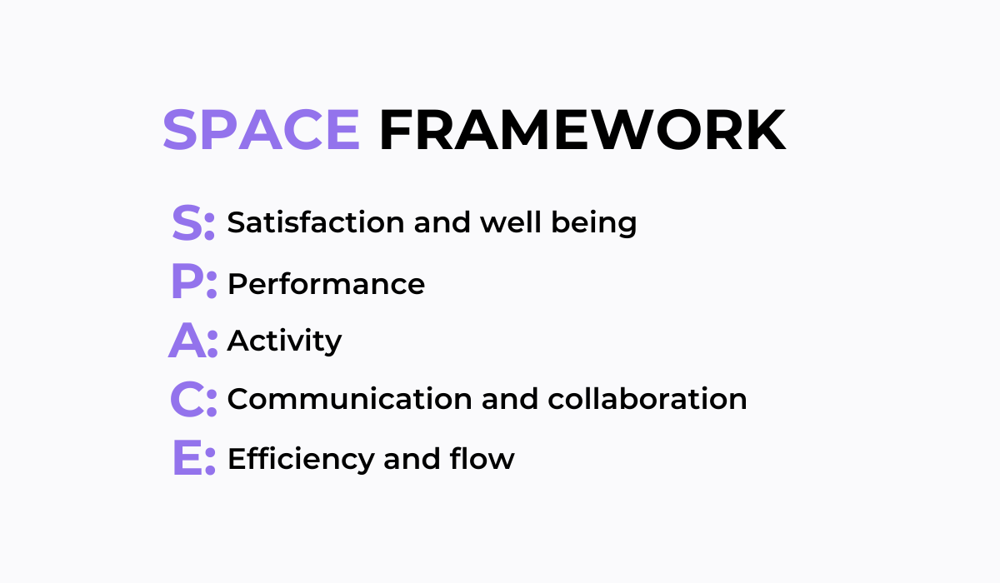

Modelo SPACE
El modelo SPACE (Satisfaction and well-being, Performance, Activity, Communication and collaboration, Efficiency and Flow) se utiliza para medir y mejorar la productividad y el bienestar de los desarrolladores. En este artículo, exploramos cómo se ha aplicado el modelo SPACE en el proyecto de refactorización de compras en línea y los resultados obtenidos.
¿Qué es el modelo SPACE?
SPACE es un marco de evaluación que aborda cinco áreas clave para mejorar la productividad y satisfacción en el proceso de desarrollo de software: satisfacción y bienestar, rendimiento, actividad, comunicación y colaboración, y eficiencia y flujo. Al evaluar cada área con métricas específicas, se puede obtener una imagen clara del estado del equipo de desarrollo y tomar medidas para optimizar el entorno laboral.
Análisis del Modelo SPACE
Dentro del proyecto de Refactorización de Compras en Línea, se han observado varias mejoras a partir de la implementación del modelo SPACE:
- Satisfacción y Bienestar: Mejoras en la calidad del código y la reducción de deuda técnica han contribuido a un entorno laboral más positivo y menos estresante.
- Rendimiento: Pruebas unitarias automatizadas y herramientas de análisis estático como SonarQube han aumentado la eficacia del equipo, permitiendo una entrega más rápida de funcionalidades.
- Comunicación y Colaboración: La promoción de la integración continua y la revisión de código ha mejorado la comunicación entre equipos y facilitado la colaboración efectiva.
- Eficiencia y Flujo: Prácticas como la refactorización continua y la automatización de pruebas han mejorado la eficiencia del proceso de desarrollo, permitiendo un flujo de trabajo más productivo.
Conclusión
La implementación del modelo SPACE en el proyecto ha demostrado ser beneficiosa para el equipo de desarrollo y la calidad del código. Al centrarse en la satisfacción, rendimiento, comunicación, y eficiencia, el equipo ha logrado una mayor productividad y un entorno laboral más positivo. A medida que el proyecto continúa evolucionando, el modelo SPACE seguirá siendo una herramienta valiosa para mantener la mejora continua y el bienestar del equipo.